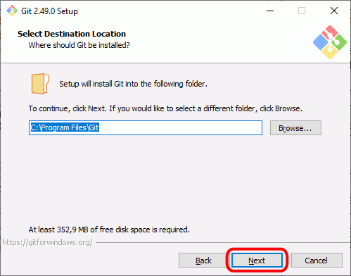
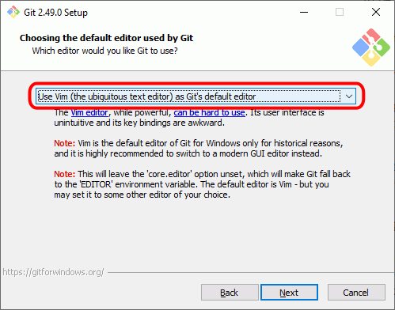
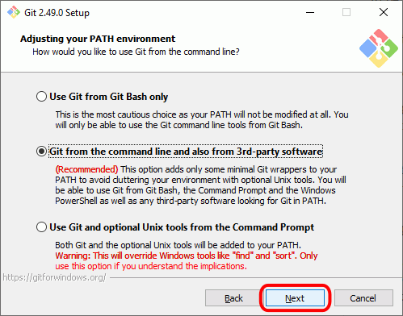
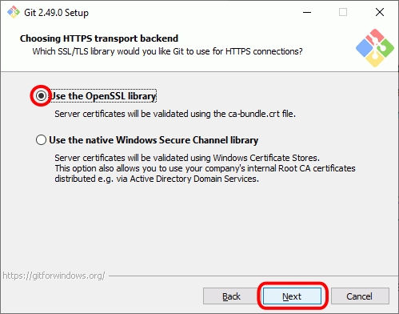
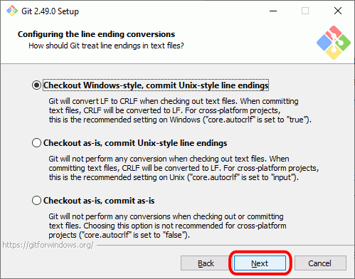
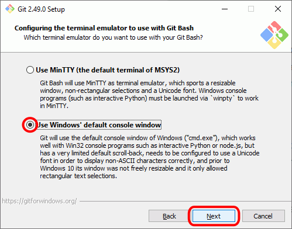

Esta lección está por completar.
Esta lección está por completar.
Git for windows es un instalador de Git-SCM para Windows.
Al instalar Git, se recomienda cambiar un par de opciones predeterminadas: que Git busque actualizaciones diariamente y que utilice Visual Studio Code como editor.











